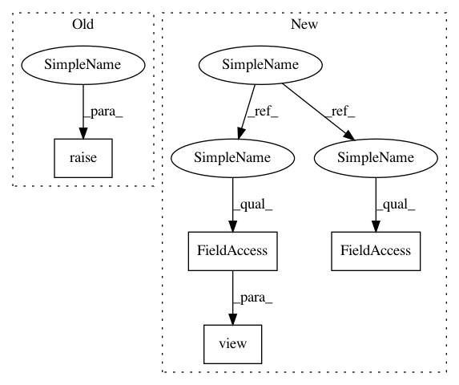

979b8c9efa551e8c948a4aca145367a2d87ac8d6,gpytorch/distributions/multitask_multivariate_normal.py,MultitaskMultivariateNormal,mean,#MultitaskMultivariateNormal#,88
Before Change
@property
def mean(self):
return super(MultivariateNormal, self).mean.view(self._output_shape)
@property
def num_tasks(self):
After Change
return super().log_prob(value.view(*value.shape[:-2], -1))
@property
def mean(self):
mean = super().mean
if not self._interleaved:
mean = mean.view(self._output_shape).transpose(-1, -2).contiguous()
return mean.view(self._output_shape)
@property
def num_tasks(self):
return self._output_shape[-1]
In pattern: SUPERPATTERN
Frequency: 3
Non-data size: 4
Instances
Project Name: cornellius-gp/gpytorch
Commit Name: 979b8c9efa551e8c948a4aca145367a2d87ac8d6
Time: 2019-02-26
Author: balandat@fb.com
File Name: gpytorch/distributions/multitask_multivariate_normal.py
Class Name: MultitaskMultivariateNormal
Method Name: mean
Project Name: cornellius-gp/gpytorch
Commit Name: ccc913a65e08bc5523eb2490d3177c472b55d094
Time: 2018-02-01
Author: gpleiss@gmail.com
File Name: gpytorch/lazy/sum_batch_lazy_variable.py
Class Name: SumBatchLazyVariable
Method Name: __getitem__
Project Name: cornellius-gp/gpytorch
Commit Name: 979b8c9efa551e8c948a4aca145367a2d87ac8d6
Time: 2019-02-26
Author: balandat@fb.com
File Name: gpytorch/distributions/multitask_multivariate_normal.py
Class Name: MultitaskMultivariateNormal
Method Name: variance